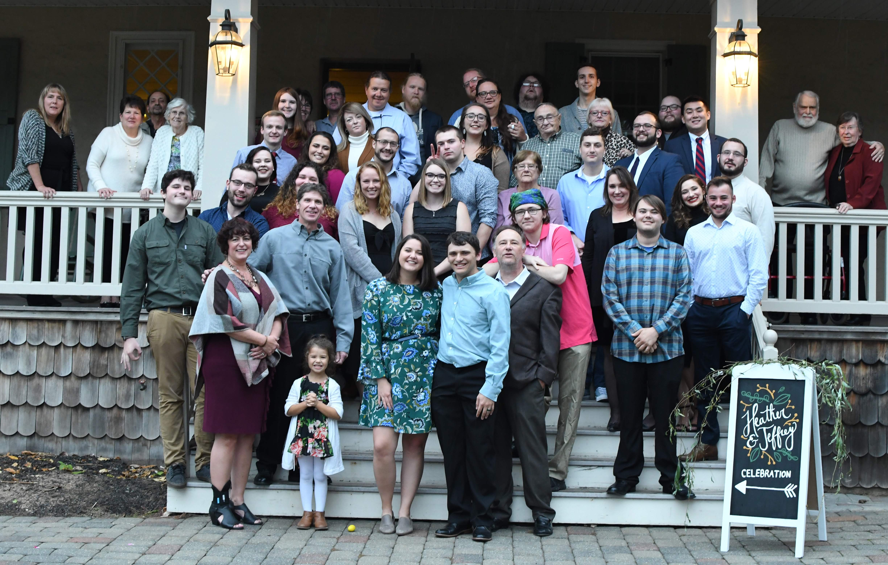

Jeffrey is 5'8"
Jeffrey has athsma
Jeffrey has Osgood-Schlatter Disease
Jeffrey does not have a favorite food
Jeffrey's chef jacket at work is misspelled "Jeffery"
Jeffrey married his wife Heather on 07/08/2019 in Costa Rica

123 Fake Street
Townsburg, USA
1-(800) 867-5309
Email Me!